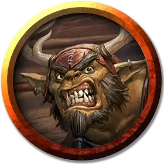

Вождь багбиров
Bugbear Chief
Средний Гуманоид (Гоблиноид), хаотично-злой

Класс Доспеха 17 (кольчужная рубаха, щит)
Хиты 65 (10к8 + 20)
Скорость 30 футов
| мод | спас | ||
|---|---|---|---|
| СИЛ | 17 | +3 | +3 |
| ЛОВ | 14 | +2 | +2 |
| ТЕЛ | 14 | +2 | +2 |
| мод | спас | ||
|---|---|---|---|
| ИНТ | 11 | +0 | +0 |
| МДР | 12 | +1 | +1 |
| ХАР | 11 | +0 | +0 |
Навыки Выживание +3, Запугивание +2, Скрытность +6
Чувства тёмное зрение 60 футов, пассивное Восприятие 11
Языки Общий, Гоблинский
Опасность 3 (700 опыта)
Бонус мастерства +2
Среда обитания Лес, Луг, Пустыня
Особенности
Жестокость. Рукопашное оружие причиняет одну дополнительную кость своего урона, когда багбир попадает им (уже включено в атаку).
Сердце Хруггека. Багбир совершает с преимуществом спасброски от испуга, отравления, очарования, ошеломления, паралича и сна.
Внезапная атака. Если багбир застает врасплох существо и попадает по нему атакой в первом раунде сражения, цель получает от атаки дополнительный урон 7 (2к6).
Действия
Мультиатака. Багбир совершает две рукопашные атаки.
Моргенштерн. Рукопашная атака оружием: +5 к попаданию, досягаемость 5 футов, одна цель. Попадание: Колющий урон 12 (2к8 + 3).
Метательное копье. Рукопашная или дальнобойная атака оружием: +5 к попаданию, досягаемость 5 футов или дистанция 30/120 футов, одна цель. Попадание: Колющий урон 10 (2к6 + 3) от рукопашной атаки или колющий урон 6 (1к6 + 3) от дальнобойной атаки.
Описание
Багбиры рождены для битвы и хаоса. Выживая набегами и охотой, они запугивают слабых и подавляют их, но при этом они готовы сражаться на стороне сильных вождей, если это сулит им кровопролитие и сокровища.
См. дополнительно статью: "Бестиарий: Багбиры"